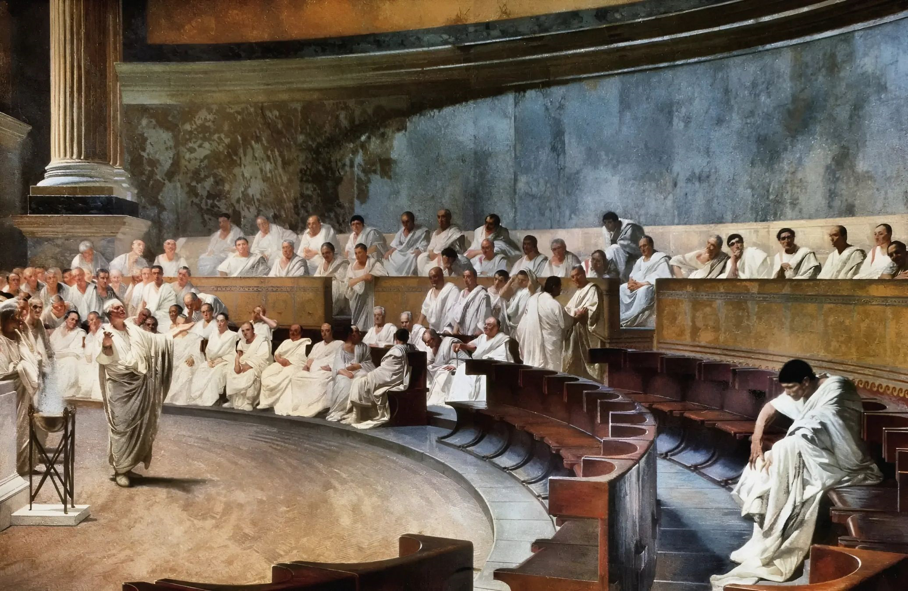

In the spring of 753 B.C., two youths from the town of Alba Longa ascended to the tip of the Palatine Hill that overlooked the River Tiber in the midlands of Italy. That day—on the eve of the Parilia—they founded the city that was to be known as Rome.
Several years later, Romulus, now king—having slaughtered his brother Remus—gathered together a group of wise patricians to serve as the repository of executive power in the newfound city. He named it the Senate.
In 494 B.C., the Tribune and the Senate overthrew Tarquin the Proud, the last king of Rome, and distributed their power among the citizens of Rome. The Senate appointed two elected Consuls to serve as the seat of executive power in Rome, while the Senate itself took power over province administration, judiciary and the treasury. A gathering of learned men, they spent their time on debate and rhetoric, performing the task of administering the most powerful kingdom in the world, presiding over the fateful battles against Carthage, Mithridates, and the conquests of Greece, Syria, Spain, and Gaul. It was to the senate that Cicero announced “Quo usque tandem abutere, Catilina, patientia nostra?”, the greatest orator of antiquity, and it was the senate which made the fateful decision on the ides of March to plunge their knives into the backs of Caesar, dictator perpetuo, to uphold the libertas of the Roman people. No republic ever stretched as long and as great as did Rome under the Senate, and no other seat held names of more esteem and power as did the Roman Senate—Caesar, Augustus, Pompey, Cicero, Cato, Crassus, Sulla, Gaius Marius, Brutus, Scipio Africanus, Cincinnatus, Verus, Mark Antony, Regulus, the Gracchi, Scipio Aemilianus, Catiline, Lepidus, Sallust, Hortensius Hortalus—a list that could go on for eternity. Guided by the Senate, the beautiful and terrible things that Rome wrought still stand, 2,000 years later.
After the death of Caesar and a long naval battle, Octavian took the name of Caesar Augustus and appointed himself princeps and imperator. In the short span of a few years he commanded all the military power of Rome. Never before had all the legions been united under a single man—until then they had been under the command of the Senate, who delegated them to the consuls and proconsuls, but now it was Caesar Augustus who commanded the legions, and claimed to delegate them as per the Senate’s will.
In 27 B.C., Augustus said that he was returning power to the senate.
But by then all knew that he was the one and true emperor. The Senate would gather, and they would discuss all the new developments of the empire and that of Augustus, and then they would bow and swear fealty to the emperor while he gave them tidbits of power over the internal provinces.
Then the second emperor, Tiberius, fought with the Senate, and soon the Senate became restricted to simply approving the Emperor’s wishes—and then, during the height of the Emperor Diocletian, the Senate was stripped of even that power. When the Empire was split it became known as the synkletos in the east, and began to consist largely of eunuchs. The Senate, a once great and powerful body, which commanded all the power, the wisdom, and the strength of Rome, was reduced to a ritual performance of chanting hymns of praise for the emperor. It was said to be an important body crucial to Rome, but no-one knew what it did or why it did it, least of all the senators themselves. They sat and they received gifts from the emperor and discussed the grace of his empire, and were content.
By the end of the medieval ages there was no more senate. The once-great organization had collapsed, and so with it the many records of their deeds and gatherings. When the Age of Enlightenment came about and the Senate was refounded, all the way across the ocean, it was the speeches of Cicero and the battles of Caesar that were remembered—once Augustus had arrived, the deeds of the Senate had been lost to history; it was if they had never existed beyond.
